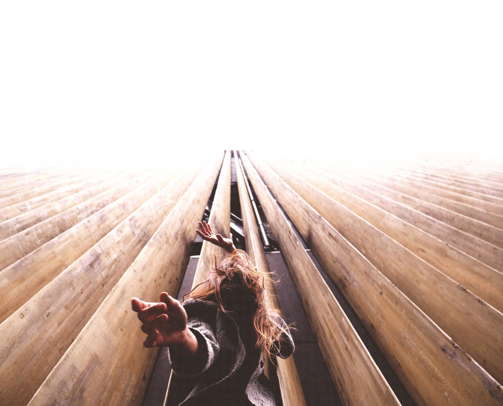

Teachers and Classes
MAITANE SARRALDE
After graduating with a degree in Physical Activity and Sports Sciences, she began dancing through improvisation. In her final year of university, she studied dance from a creative and therapeutic perspective at the University of Human Motricity in Lisbon.
Since then, she has trained and devoted herself to the creation and performance of contemporary dance, integrating circus and martial arts and Contact Improvitation.
In 2016, she returned to Portugal to study dance theater with the Olga Roriz company, where she discovered vertical dance with Magalie Lanriot. During this time, she collaborated in vertical and contemporary dance shows in Portugal and England.
In 2019, she studied at La Faktoria Choreografic Center. Once there, she continued to work as a “vertical dancer” in local companies and international collaborations.
In April 2021, she completed her training in physical theater at the C.E.C. (Cuerpo Espacio Creación) at the Pablo Ibarluzea International School. In 2020, she began working with the Marie de Jongh company on the shows IKIMILIKILIKLIK and AMA, while also beginning to independently research the transfer between floor dance and harness dance.
It intensively shares workshops and laboratories on movement, training, and dance with harnesses; “Dantzerti Higher School,” “Pablo Ibarluzea International School, CEC,” “Dantzaka Zirko espazioa,” “Zirkuola Zirko eskola,” “Zirkozaurre,” “Muxikebarri Antzokia,” “La Parrala”...
In early 2024, she trained in acrobatic rigging with Isaac Saito. In 2024, she also completed her training in Contact Improvisation at FCI, Bilbao. Currently, and for the past two years, she has been taking regular composition and movement classes with Monica Valenciano.
In 2024, she was awarded the XIII edition of the “AixeGetxo” Awards, in the Aixegaztea category, promising young artists.
In 2024-25, she conducted research on the physics and mechanics of suspended bodies. She also carried out a short-term project to reflect on the body, architecture, and the gaze with Indi Costa at the Muxikebarri theater. The result of this was the exhibition and video dances “Body-Space-Gaze.”
In 2025, she highlights the training she received from Andres Corchero (Body Weather), Joao Fiadeiro (Real-Time Composition), and Yaniv Mincher (CI) and Elastic Chaos with María and Ona (Axis Silavus & CI) for identifying with their work.
In 2020, she created her COMPANY:
The company was born when Maitane Sarralde felt the desire to explore new approaches to harness dance and the intrinsic narrative of the dynamics and elements that govern “uprooted” dance and bodies that move with detachment between earth and air. To this end, she formed a team of like-minded individuals with whom she created her first work, Desªnuda.
Desªnuda premiered in 2022. It is a solo piece of contemporary and suspended dance that deals with the knot and surrender to the naked void. It is a piece supported by the Getxo City Council and co-produced by the Basque Government.
It received a mention from the Umore Azoka'22 jury for “the creativity, research, and innovation it brings to the artistic proposal.” It has been recommended by the Circus Commission of the Spanish Theater Network and has also been recommended in the dance catalog of the Puncat program (second semester of 2023).
After the process of her first creation, Maitane, she finds dialogue with rope and words crucial. She also begins to delve deeper into the mechanics and systems of rigging as a creative tool with which to reformulate the skeleton of space and the possibilities of bodies and aerial elements.
In 2023, the company's second project, Madre Perla, emerged. A contemporary piece that dances on the wall. A co-creation between Magalie Lanriot and Maitane Sarralde that premiered in July 2024 in Aveiro, Portugal. With the support of Blanca Arrieta during the creative process. Currently, he wants to put aside the harness to develop more grounded work.
WORKSHOP
VERTICAL DANCE IN NATURE
Workshop description
In this vertical dance workshop, we will work with chest harnesses and semi-static rope on a wall between 10-14m high. It will be an introduction to vertical dance on the wall from a healthy and conscious place. We will use the vertical supports of the wall/rock and the harness to understand our bodies in other planes where we can dance in dialogue with the inertia of the pendulum and the sensation of hanging or anti-gravity.